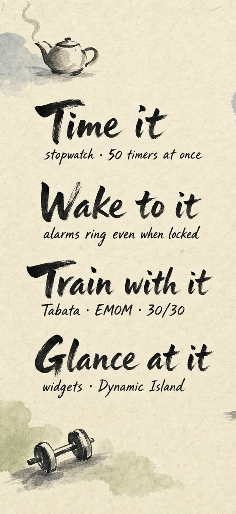
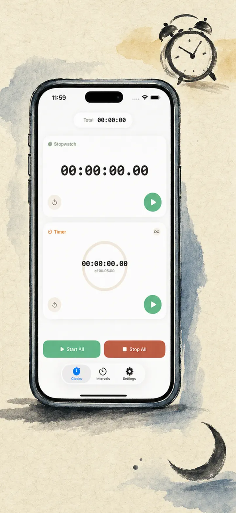
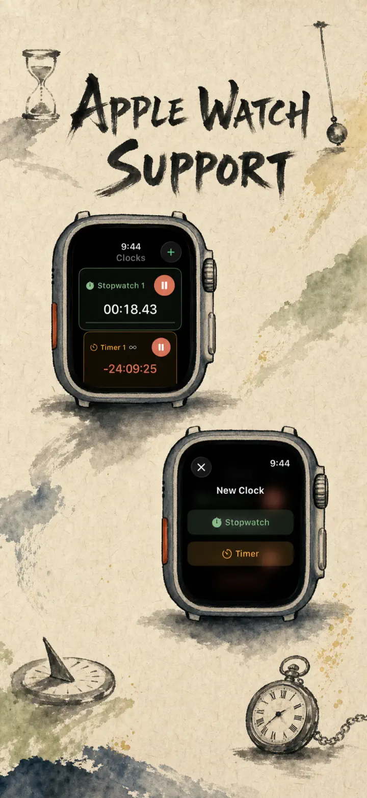
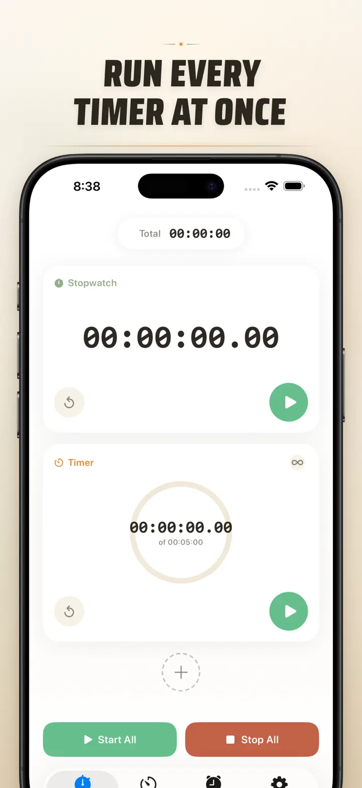
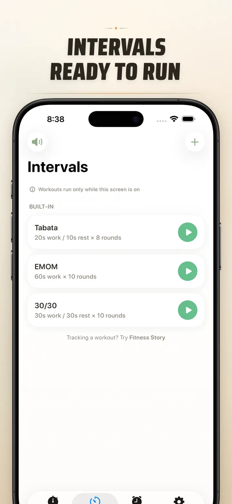
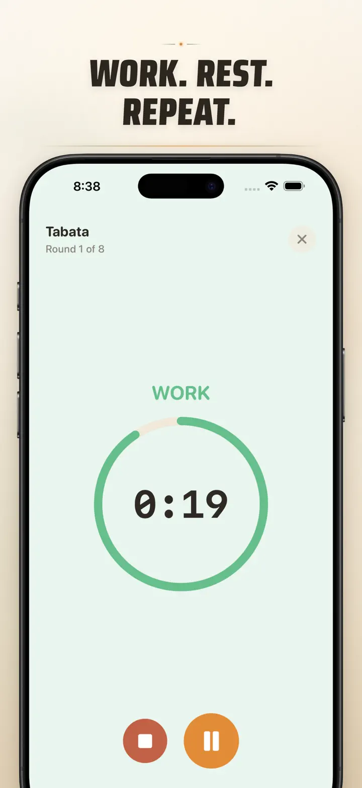
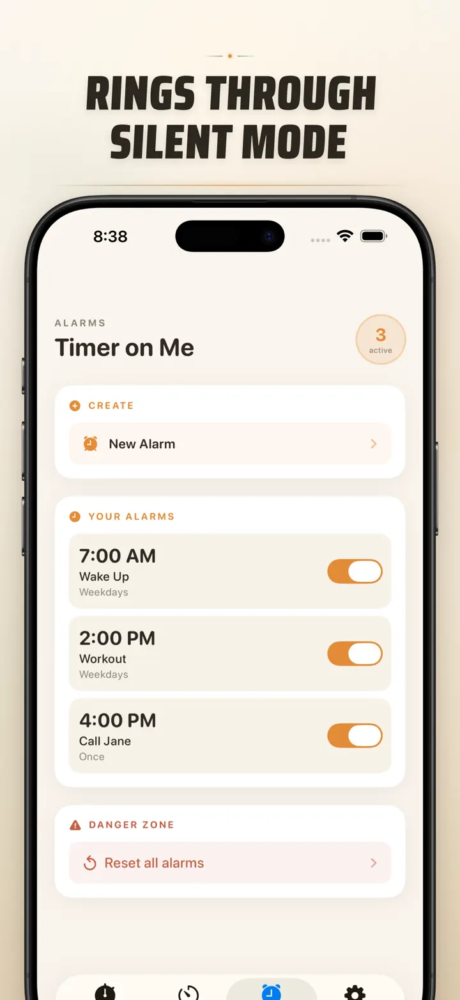

Timer on Me
Timer, Alarm, Stopwatch & HIIT
Now with Date Alarms: set a one-time alarm for any future date & time, alongside recurring alarms, 50 timers at once, HIIT & Tabata workouts, and Apple Watch support.
Download on the App Store
About the app
Timer on Me is the reliable multi-timer and stopwatch for iPhone, iPad, and Apple Watch. Run up to 50 independent timers at once, time interval workouts with precision, and trust that your alerts will fire — even if your phone is locked or the app is closed.
ALARMS
- Wake-up and reminder alarms with custom labels and weekday schedules
- Powered by AlarmKit — rings even when iPhone is locked or Timer on Me is closed
- Configurable snooze (3 / 5 / 9 / 15 / 30 minutes) or no snooze
- Choose from bundled ringtones or import your own sounds
- One-tap enable/disable from the dedicated Alarms tab
WORKOUTS & INTERVALS
- Built-in Tabata, EMOM, and 30/30 presets — start training in two taps
- Custom interval editor with flexible minute/second pickers for work, rest, and rounds
- Full-screen workout mode with phase color cues and optional sound mute
- Pause, skip, and resume mid-workout without losing your place
APPLE WATCH
- Full native watchOS app — not a companion shell
- Multiple concurrent stopwatches and timers on your wrist
- Centisecond stopwatch precision
- Dedicated watch complications for one-tap access
- Works independently when your iPhone is out of reach
50 TIMERS AT ONCE
- Run up to 50 independent timers and stopwatches in a single session
- Start, stop, and reset individually or in synced groups
- Auto-repeat for looping rounds
- Timers continue past zero to track overtime
- Visual progress bars with color cues at 50% (yellow) and 10% (red)
- Drag-and-drop reordering and custom names
RELIABLE ALERTS
- AlarmKit: alarms ring even if iPhone is locked or Timer on Me is closed
- Dynamic Island and Live Activity for glanceable progress
- Home Screen widgets in Small, Medium, and Large sizes
- Built-in ringtones including bells, birds, and vintage tones
- Tap to preview ringtones instantly before selecting
- "Keep Screen On" mode prevents dimming during long sessions
CUSTOMIZE & SHARE
- Toggle decimals, totals, and percentages per your workflow
- Save and overwrite sessions for instant reuse
- Export sessions as CSV, JSON, or Plain Text
- Share timer setups with teammates, students, or clients
BUILT FOR iPhone, iPad & APPLE WATCH
- Adaptive layouts for all screen sizes
- iPad Split View support
- Available in 34 languages
PERFECT FOR
- HIIT, Tabata, CrossFit, and circuit training
- Boxing rounds and martial arts sparring
- Studying with Pomodoro and focus blocks
- Cooking, baking, and multi-dish meal prep
- Classroom activities and group timing
- Yoga, meditation, and breathwork
- Music practice and public speaking
- Board games and party events
Download Timer on Me and take full control of your time — at the gym, at work, or at home.
Privacy Policy: https://masawata.net/privacy-policy.html Terms Of Service: https://www.apple.com/legal/internet-services/itunes/dev/stdeula/
Screenshots






Timer on Me
Now with Date Alarms: set a one-time alarm for any future date & time, alongside recurring alarms, 50 timers at once, HIIT & Tabata workouts, and Apple Watch support.
Download on the App Store